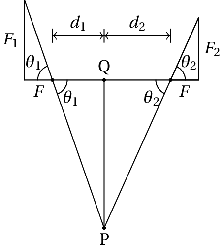
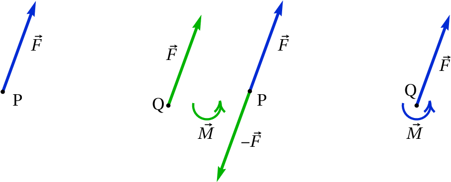
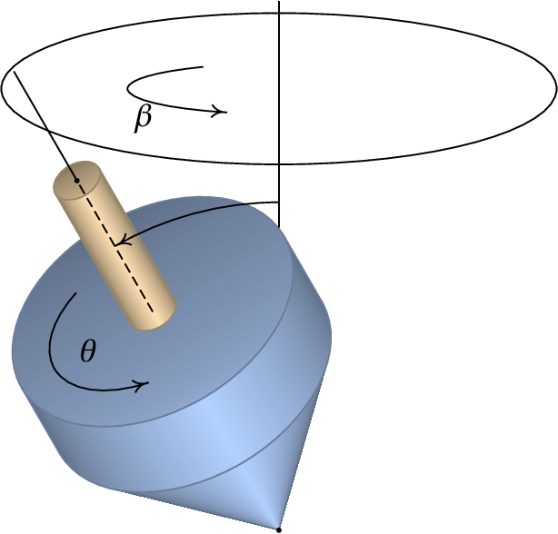
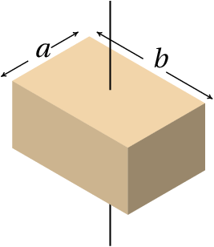
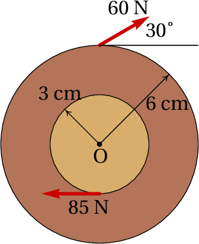
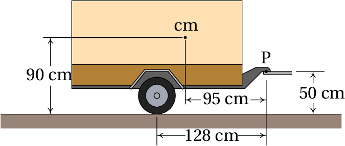
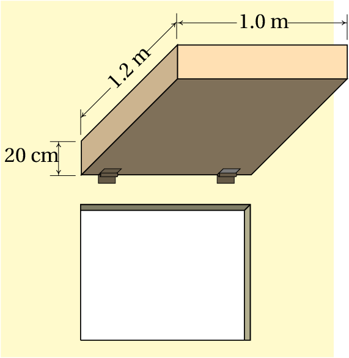

Para conseguir dar uma curva com uma bicicleta ou uma moto, é
necessário que exista suficiente atrito entre os pneus e a estrada,
porque a força de atrito deverá ser igual à massa vezes a aceleração
centrípeta. Como a força de atrito atua na superfície dos pneus, se o
condutor não se inclinasse, a lei da inércia implicava que a sua
tendência fosse continuar numa trajetória retilínea, contrariando a
trajetória circular da superfície dos pneus produzindo
desequilíbrio. Nas corridas de motos, as velocidades elevadas implicam
ângulos de inclinação maiores; para conseguir inclinar mais a moto, o
condutor vira inicialmente o volante no sentido oposto ao sentido em
que vai tomar a curva e sai para o lado em que a moto se inclina para
contrariar a tendencia da moto cair para o lado oposto.
5.1. Vetores deslizantes
Os vetores introduzidos no capítulo 2 são
vetores livres, que são considerados iguais se tiverem o mesmo módulo,
direção e sentido, independentemente do ponto do espaço onde se
encontrem. No caso das forças, não basta saber o módulo, direção e
sentido. Por exemplo, quando se aplica uma força numa porta para
fechá-la, para além do módulo, direção e sentido da força, será também
importante o ponto em que essa força for aplicada. Quanto mais longe
das dobradiças for aplicada a força, mais fácil será fechar a porta; a
força necessária para fechar a porta será muito elevada se for
aplicada num ponto muito próximo de uma das dobradiças.
Imagine que para movermos uma cadeira para outro sítio, levantamo-la
com uma mão. Se o peso da cadeira for 40 N, e o seu centro de
gravidade for o ponto C indicado na figura 5.1, poderíamos
apoiar a nossa mão num ponto P no espaldar da cadeira e aplicar uma
força vertical ligeiramente superior a 40 N para levantá-la. Enquanto
a cadeira começa a subir, rodará até ficar na posição de equilíbrio,
como no lado direito da figura 5.1, em que o peso e a força
aplicada pela mão encontram-se na mesma reta vertical. Se pudéssemos
aplicar a força para cima num ponto da cadeira que estivesse na mesma
vertical em que o ponto C estava inicialmente, a cadeira começaria a
subir sem rodar.
Figura 5.1: Cadeira com peso de 40 N a ser levantada com uma força para cima.
Podemos concluir que para prever o efeito que produzirá uma força,
será necessário saber o seu módulo, direção, sentido e também a sua
linha de ação, que é a
linha reta na mesma direção da força, que passa pelo ponto onde a
força é aplicada. Uma força produz efeitos diferentes se for aplicada
em linhas de ação diferentes, embora o seu módulo, direção e sentido
continuem iguais.
Figura 5.2: Três pontos
equivalentes.
Este tipo de vetores, caraterizados por uma linha de ação específica,
chamam-se vetores deslizantes. O
ponto exato onde forem aplicadas não é importante, sempre que esse
ponto esteja na sua linha de ação. No exemplo da cadeira a ser
levantada, a mesma força
para cima podia ter sido aplicada
nos pontos Q ou R na figura 5.2, que estão na mesma linha
vertical com o ponto P, e o efeito teria sido o mesmo. A cadeira
rodaria na mesma direção e com a mesma aceleração angular. Como tal, é
equivalente admitir que
é aplicada em P, Q, R, ou qualquer
outro ponto na sua linha de ação. Contudo, a pesar do efeito inicial
ser o mesmo, uma vez a cadeira começa a rodar, os pontos P, Q e R
deixam de estar na mesma linha vertical. A vertical que passa por Q
ficará mais próxima do centro de gravidade do que a vertical que passa
por R. Como tal, a cadeira oscilará mais antes de ficar em equilíbrio,
quando a força for aplicada em R, do que quando é aplicada em Q.
Sempre que foi necessário somar forças no
capítulo 4, admitimos que podiam ser deslocadas
livremente e somadas como vetores livres, usando a regra do
paralelogramo. Nas próximas seções mostra-se que essa soma de forças
como se fossem vetores livres não está errada, sempre e quando seja
adicionado também o efeito de rotação introduzido quando se desloca
uma força para uma linha de ação diferente. A aceleração no movimento
de translação de um corpo rígido é devida à força resultante que pode
ser obtida somando as forças externas como vetores livres. A
aceleração angular no movimento de rotação é devida a que as linhas de
ação das forças externas não passam pelo centro de massa.
5.2. Sobreposição de forças
Para determinar como somar forças e, em geral, vetores deslizantes,
consideremos primeiro o caso mais simples, quando as forças a serem
somadas estão na mesma linha de ação. Por exemplo, se pretendermos
levantar um livro que está em repouso sobre uma mesa horizontal, como
na figura 5.3, para aplicar uma força oposta ao peso, e na
mesma linha de ação, podíamos fazer um furo vertical no livro,
passando pelo centro de gravidade, e passar uma corda pelo furo,
segurando-a na base com uma anilha.
Figura 5.3: Forças colineares.
Quando puxarmos a corda para cima, com uma força
, essa força
será colinear com o peso, isto é,
as duas forças têm a mesma linha de ação, o que permite que sejam
deslocadas para um ponto comum nessa linha de ação e somadas como
vetores livres. Se
for maior que
, o livro subirá na
vertical, com movimento uniformemente acelerado e sem rotação; após
ter ganho alguma velocidade, reduzimos o módulo da força
,
fazendo com que fique igual a
, para que o livro continue a
subir com velocidade constante. Quando o livro estiver próximo da
altura à qual o queremos subir, reduzimos o módulo da força
novamente, de forma que a aceleração vertical seja negativa, até o
livro parar; uma vez para, voltamos a aumentar ligeramente a força,
ficando igual a
, para que o livro permaneça em repouso
pendurado da corda. Estamos tão habituados a seguir esse procedimento,
que nem damos conta dele. Mas se fossemos programar um braço robótico
para repetir o processo, teríamos de seguir todos esses passos.
Para não termos de furar o livro, para o levantar sem que rode,
podíamos passar uma folha de papel por debaixo, como no lado esquerdo
da figura 5.4, e puxar nos dois lados da folha de papel, de
forma que o livro permaneça horizontal enquanto sobe. Estaremos então
a aplicar duas forças
e
, representadas na
parte central da figura 5.4
Figura 5.4: Sobreposição de forças concorrentes.
Essas duas forças chamam-se
concorrentes, porque as suas
linhas de ação são diferentes mas cruzam-se um ponto comum P. Podemos
então deslocar cada uma das forças na sua linha de ação até o ponto
comum P, e somá-las nesse ponto como vetores livres, produzindo a
força resultante
no lado direito da
figura 5.4. Observe-se que, se o livro é levantado mantendo
sempre a sua orientação horizontal, não roda e a força resultante
será colinear com o peso
. Ou seja,
na figura 5.4 o ponto P e o centro de gravidade, C, do livro
deverão estar na mesma linha vertical; os módulos e as direções de
e
deverão ter as relações necessárias para que
isso aconteça.
Quando as linhas de ação de duas forças
e
são
paralelas, como é o caso no lado esquerdo da figura 5.5,
podemos usar o seguinte procedimento para obter a sua resultante
: começa-se por deslocar as forças, nas suas
linhas de ação, até ficarem em pontos que estejam na mesma linha
perpendicular a essas linhas. A seguir, aplicam-se duas forças
e
, nos dois pontos onde estão a ser aplicadas
e
, como mostra a parte central da
figura 5.5; a introdução dessas duas forças não altera o
sistema de forças, porque as duas forcas
e
são
colineares e a sua resultante é nula. As forças
e
, aplicadas no mesmo ponto somam-se produzindo a força
no mesmo ponto; de forma análoga,
e
somam-se produzindo a força
. As duas forças
e
são concorrentes, e a sua resultante obtém-se pelo
procedimento usado para forças concorrentes (lado direito da
figura 5.5).
Figura 5.5: Sobreposição de forças paralelas.
Observe-se que a força resultante,
, tem a mesma
direção e sentido das duas forças
e
e o seu
módulo é igual à soma dos módulos de
e
, já
que, a soma dos vetores livres
e
no ponto P,
é igual à soma de
e
, como se fossem vetores
livres:
(5.1)
Se
e
tivessem sentidos opostos, a resultante
será então no sentido da força que tiver maior módulo e o módulo da
resultante seria o módulo da maior menos o módulo da menor.

Figura 5.6: Linha de ação da resultante.
A linha de ação da resultante
será outra reta
paralela, mas diferente, às linhas de ação de
e
. Para determinar as distâncias
e
, desde a
linha de ação da resultante até às linhas de ação das forças
e
, observa-se (figura 5.6) que a
distância entre o ponto comum de
e
, P, e o
ponto Q, onde a linha de ação da resultante cruza a reta que passa
pelos pontos de aplicação de
e
, é igual a:
(5.2)
onde
e
são os ângulos entre as forças
e
e a perpendicular às suas linhas de
ação. Como
é a soma de duas forças perpendiculares,
e
, e
é também a soma de duas
forças perpendiculares,
e
, as tangentes dos dois
ângulos são:
(5.3)
e, substituindo essas expressões na equação 5.2, obtém-se um
resultado chamado lei das alavancas:
(5.4)
Resumindo, para levantar o livro por meio de duas forças verticais,
sem que o livro rode, será necessário que a relação entre os módulos
dessas duas forças,
, seja o inverso da relação entre as
distâncias das suas linhas de ação até o centro de gravidade,
.
5.3. Momentos e binários
A regra das alavancas pode ser explicada introduzindo o conceito de
momento de uma força, em relação
a um ponto. Define-se o momento de uma força
, em relação a
um ponto O, igual ao produto do módulo da força vezes a distância
que há entre o ponto O e a linha de ação da força:
(5.5)
A distância
chama-se braço da força,
em relação ao ponto O e o momento
também costuma
chamar-se torque.
Figura 5.7: Momento de uma força.
Se
for o vetor posição, desde o ponto O até o ponto P onde a
força
é aplicada, o braço da força em relação a O será igual
a
, em que o ângulo
é o ângulo entre os
vetores
e
(figura 5.7). Conclui- -se que o
momento da força em relação ao ponto O é igual a,
(5.6)
O momento
mede o efeito de rotação produzido pela
força, se no ponto O houvesse um eixo fixo, perpendicular ao plano
formado por
e
, podendo o corpo rodar à volta desse
eixo (se o ponto O estiver fora do corpo, pode imaginar-se uma barra
rígida ligada ao corpo, que se estende até O). Quanto mais afastada
estiver a linha de ação da força do ponto O, maior será o momento da
força. Isso explica porquê é mais fácil fechar a porta quanto mais
longe das dobradiças for aplicada a força. Se o ponto O estiver na
linha de ação da força,
será 0, os vetores
e
não
definirão nenhum plano, e o momento da força será nulo.
Na figura 5.7, observe-se que
é a componente
da força na direção perpendicular ao vetor posição
, ou seja,
o momento da força é também igual ao produto da distância desde a
origem até o ponto onde atua,
, vezes a componente da força
perpendicular à reta que passa por O e pelo ponto onde a força é
aplicada.
A equação 5.6 mostra que o momento da força é igual ao módulo
do produto vetorial entre o vetor posição e a
força. Como tal, é conveniente definir o
vetor momento da força
, em
relação ao ponto O,
(5.7)
O momento é uma tendência a rodar em torno de um eixo na direção do
vector
, ou seja, num plano de rotação
perpendicular a
e no sentido da regra da mão
direita: se o eixo dos
for escolhido na direção e sentido de
, a rotação será no sentido do semieixo positivo
dos
para o semieixo positivo dos
. Na figura 5.7 o
momento é um vetor que aponta para fora da imagem e foi representado
por um arco circular com uma seta a apontar no sentido da rotação.
Figura 5.8: Binário.
O método descrito para somar forças paralelas falhará no caso em que
as duas forças formam um binário, que
são duas forças paralelas com o mesmo módulo mas em sentidos opostos,
como na figura 5.8. Nesse caso, as forças
e
não serão concorrentes e não podem ser deslocadas para um
ponto comum. No entanto, a equação 5.1 indica que a
resultante será nula. O binário não produz nenhuma translação em
nenhum sentido, mas apenas rotação. O momento total, em relação à
origem O, é a soma dos momentos das duas forças,
(5.8)
Os dois vetores posição dos pontos Q e P dependem de onde estiver a
origem O, mas a sua diferença é a posição relativa
na figura, que não depende do ponto onde
estiver a origem.
Isso quer dizer que o binário produz um momento que não depende de nenhum
ponto de referência,
(5.9)
Na figura 5.8 o vetor momento do binário aponta para fora da
figura, e foi representado por um arco circular com uma seta, no
sentido anti-horário.
Uma força
aplicada num ponto P pode ser deslocada para outro
ponto Q, fora da sua linha de ação, usando o procedimento ilustrado na
figura 5.9. Adicionam-se duas forças
e
nos
pontos P e Q, que acrescentam um momento que chamaremos
(no
sentido dos ponteiros do relógio na figura); para não alterar nada, adiciona-se também um binário
(no sentido contrário aos ponteiros do relógio) que anula o
binário
. No ponto P ficam duas forças
iguais e opostas que se anulam; o sistema resultante é então a mesma força
inicial
, mas aplicada no ponto Q, e o binário
:
(5.10)
que é igual ao momento
que a força original, em
P, produz em relação ao ponto Q para onde foi deslocada.

Figura 5.9: Procedimento para deslocar uma força de um ponto P para outro ponto Q.
Conclui-se então que a resultante de um conjunto de forças será a soma
delas como vetores livres e pode colocar-se em qualquer ponto Q,
sempre e quando seja acrescentado também um binário que é igual à soma
dos momentos de todas as forças em relação a Q.
Quando as direções de todas as forças estiverem num mesmo plano, será
conveniente definir dois dos eixos coordenados nesse plano, por
exemplo
e
, e a origem no ponto onde vão ser somadas as
forças. Como tal, o momento de cada força
em relação à
origem tem unicamente componente segundo
, igual ao determinante:
(5.11)
em que
e
são as coordenadas do ponto onde atua a
força
. Se
houver
forças externas, todas no plano
, a força e binário
resultantes na origem O são:
(5.12)
O binário resultante pode ser eliminado, deslocando a força resultante
para um ponto a uma distância
da linha que
passa pela origem, paralela a
.
Quando as linhas de ação das forças não estão num mesmo plano, o
binário resultante
terá também uma componente
paralela à força resultante
. A componente de
perpendicular a
pode ser
eliminada, deslocando a força, ficando força e momento resultantes
paralelos.
5.4. Equilíbrio dos corpos rígidos
Se a força resultante
de todas as forças externas
atuando num corpo rígido for nula, e se o momento resultante dessas
forças,
, for também nulo em relação a um ponto,
então
será também nulo em qualquer outro ponto,
já que o deslocamento da força resultante (nula) não introduz nenhum
binário. Nesse caso, as forças externas não produzem nenhum efeito de
aceleração linear nem angular e o corpo rígido encontra-se em
equilíbrio: ou em repouso, ou com velocidade (linear e/ou angular)
constante.
Como tal, as condições de equilíbrio de um corpo rígido é que a soma
das forças externas, como vetores livres, seja nula e que a soma dos
momentos de todas as forças externas, em relação a qualquer ponto,
seja
nula.
Exemplo 5.1
O automóvel na figura, com peso de 9000 N, encontra-se em repouso numa
estrada horizontal. O centro de gravidade, C, do automóvel encontra-se
60 cm detrás do eixo das rodas da frente e 120 cm à frente do eixo das
rodas de atrás. Determine a força de reação normal em cada pneu.
Resolução. O automóvel encontra-se em equilíbrio. A figura à
direita mostra o diagrama de corpo livre.
é a soma das reações
normais nos dois pneus da frente e
é a soma das reações normais
nos pneus de atrás (admitindo que os lados esquerdo e direito sejam
simétricos, essas forças estarão aplicadas ao meio de cada um dos
eixos). Se houver forças de atrito nos pneus, o único que podemos
concluir é que a soma delas deverá ser nula; o calculo dessas forças
implica conhecer melhor a estrutura do carro e a sua deformação devida
ao seu peso; admitiremos que o carro é perfeitamente rígido, sem
sofrer deformações e, como tal, não há forças de atrito.
A condição de equilíbrio para que a força resultante seja nula é:
Para encontrar o valor dessas duas forças há que considerar também a
condição de que a soma dos momentos, das 3 forças externas, é nula, em
relação a qualquer ponto. A soma dos momentos em relação ao ponto A é:
A seguir podia substituir-se esse valor na condição para a soma das
forças verticais, mas também é possível usar a condição de que a soma
dos momentos em relação a B é nula:
Admitindo que o centro de gravidade está a igual distância dos pneus
direitos e esquerdos, cada uma das reações normais nos pneus da frente
será 3000 N e a reação normal em cada pneu de atrás será 1500 N.
Se o automóvel tivesse movimento uniforme, estaria ainda em
equilíbrio, mas existiria também a força de resistência do ar, que
aponta para a direita e para baixo. A componente horizontal dessa
força do ar seria contrariada por forças de atrito entre os pneus e a
estrada, com resultante para a esquerda, e a componente vertical seria
contrariada por um aumento das reações normais nos pneus. Mas como a
resistência do ar e as forças de atrito teriam linhas de ação
diferentes, o resultado seria um binário que faz rodar o automóvel no
sentido dos ponteiros do relógio; o aumento da reação normal seria
maior nos pneus de atrás do que nos da frente. Para poder calcular
esse binário seria necessário conhecer o coeficiente aerodinâmico
do automóvel, a velocidade do vento e o ponto de
aplicação da resistência do ar, que é uma força distribuída em toda a
superfície do automóvel.
5.5. Centro de massa
Um corpo rígido é uma distribução contínua de massa num volume. Se a
massa total do corpo for
, e
for a massa
infinitesimal que existe em cada ponto do corpo,
(5.13)
em que o integral é de volume, dentro do volume ocupado pelo sólido,
já que
é o produto da massa volúmica
pelo
volume infinitesimal
.
Define-se o vetor posição do centro de
massa,
, igual à média,
pesada pela massa, do vetor posição no sólido:
(5.14)
Exemplo 5.2
Encontre a posição do centro de massa do sólido homogéneo representado
na figura.
Resolução. O volume do sólido é delimitado pelos 5 planos
,
,
,
e
.
A área infinitesimal
é igual à massa volúmica
vezes o volume infinitesimal em coordenas cartesianas,
. Começa-se por calcular a
massa total a partir da equação 5.13:
Como o corpo é homogéneo,
é constante. No Maxima, os três
integrais devem ser calculados de forma sequencial; p
representará a massa volúmica
Conclui-se que o vector posição do centro de massa é:
.
Em todo corpo rígido existe sempre um único ponto que é o centro de
massa. Se a origem for escolhida exatamente no centro de massa, o
integral na equação 5.14 será nulo para cada uma das três
componentes:
(5.15)
Os integrais em 5.15 serão todos nulo unicamente se a origem
estiver no centro de massa. Este resultado será muito importante mais
para a frente.
Derivando os dois lados da equação 5.15 obtém-se a expressão
da o velocidade do centro de massa:
(5.16)
Isto é, a velocidade do centro de massa é a média das velocidades de
todos as partes do corpo, com pesos iguais às massas das partes.
E derivando a equação 5.16,
em ordem ao tempo, obtém-se a aceleração do centro de massa,
(5.17)
que é a média, pesada pela massa, das acelerações de todas as partes
do corpo.
Se o referencial em que é medida a aceleração
de cada ponto
for um referencial inercial, o produto
será
igual à força resultante
que atua sobre a massa
:
(5.18)
Observe-se que sempre que exista aceleração, deverá existir uma força
infinitesimal
aplicada em cada ponto do sólido,
para conseguir acompanhar o movimento do corpo, permanecendo
rígido. Na maioria dos pontos essa força é devida unicamente às forças
internas de contacto entre as partes do corpo, forças essas que são
desencadeadas em todo o corpo pela ação de
forças externas
,
, …,
que atuam em
pontos
do corpo rígido. Nos pontos 1, 2, …,
, a força
inclui as forças de contacto mais a força externa em cada ponto. A
diferencial
é a variação da força em todos os
pontos do volume do corpo.
Substituindo a expressão 5.18 na equação 5.17,
conclui-se que,
(5.19)
Na soma das forças em todos os pontos do corpo, por cada força interna
de contacto que existir num ponto, existirá outra força igual mas de
sentido oposto em outro ponto vizinho, devido à lei de ação e
reação. Assim sendo, no integral
todas as
forças internas de contacto serão eliminadas, ficando unicamente a
soma das forças externas,
,
, …,
, que é igual à força resultante sobre o corpo rígido. Como
tal, a equação 5.19 é equivalente a,
(5.20)
Este resultado importante é a lei do movimento de translação do corpo
rígido:
O movimento do centro de massa de qualquer corpo rígido com
massa
é igual ao movimento que teria uma partícula pontual com
massa
sob a ação de uma força igual à força resultante sobre o
corpo rígido.
Lembre-se que a soma das forças é feita como se fossem vetores
livres. Se a força resultante for nula, o centro de massa estará ou em
repouso ou em estado de movimento retilíneo uniforme, mas outros
pontos no corpo rígido poderão ter movimentos mais complicados.
O peso é um exemplo de força externa aplicada em todos os pontos do
corpo rígido. A equação 5.19 nesse caso dá,
(5.21)
Se a aceleração da gravidade
for igual em todos os pontos do
corpo, o integral no lado esquerdo será igual a
e
conclui-se que a aceleração do centro de massa é igual à aceleração da
gravidade e que o centro de gravidade
—ponto de aplicação da força resultante do peso de todas as partes
do corpo— coincide com o centro de massa. Existem casos em que
não é constante em todo o corpo, mas geralmente isso não
acontece, sendo possível assumir que o peso total do objeto é a força
aplicada no centro de massa.
Considere-se, por exemplo, uma lâmina triangular. Pendurando-a por um
dos vértices, começará a oscilar até parar numa posição em que o
centro de gravidade esteja no mesmo segmento de reta vertical que
passa pelo vértice; traçando esse segmento no triângulo e repetindo o
procedimento para os outros dois vértices, o ponto onde se cruzam os
três segmentos será o centro de gravidade e centro de massa. Se a
massa volúmica do triângulo for igual em todos os pontos, cada um dos
segmentos verticais será a mediana que divide o
triângulo em duas partes com a mesma área e, consequentemente, com o
mesmo peso. Nos sólidos com formas simétricas e massa volúmica
constante, o centro de massa encontra-se no centro geométrico. A
figura 5.10 mostra outros três exemplos.
Figura 5.10: Centros de massa de 3 objetos com massa volúmica constante:
esfera, cilindro e paralelepípedo.
5.6. Translação sem rotação
Num corpo rígido com movimento de translação sem rotação, a cada
instante a aceleração de todos os pontos é a mesma, igual à aceleração
do centro de massa, que é igual à soma das forças externas dividida
pela massa do corpo. Como o corpo não roda, a soma dos momentos de
todas as forças em relação ao centro de massa deverá ser nula. Há que
ter atenção ao facto de que a soma dos momentos é nula unicamente em
relação ao centro de massa; em relação a outro ponto P, a soma dos
momentos será igual e oposta ao momento da força resultante, que atua
no centro de massa, em relação a P.
Exemplo 5.3
O mesmo automóvel do exemplo 5.1, acelera durante 20 s, com
aceleração tangencial constante, desde o repouso até à velocidade de
60 km/h. Sabendo que o centro de gravidade está 57 cm por cima do
chão, determine as forças de reação normal em cada pneu, no instante
em que começa o seu movimento.
Resolução. No momento em que o automóvel começa a andar, a
resistência do ar é nula, porque a velocidade também é nula. Como tal,
as únicas forças horizontais que podem ser responsáveis pela aceleração
são as forças de atrito estático,
, entre os pneus
e a estrada. A figura seguinte mostra o diagrama de corpo livre.
é a soma das duas reações normais nos dois pneus da frente e
a soma das reações normais dos pneus de atrás. A aceleração
tangencial do automóvel é no sentido horizontal e igual a:
A lei do movimento para a translação conduz às equações:
Como o automóvel não roda, a soma dos momentos das forças externas, em
relação ao centro de massa (que é o mesmo centro de gravidade) deverá
ser igual a zero. O peso não produz momento em relação ao centro de
massa. Os momentos das forças
e
, em
relação ao centro de massa, são no sentido dos ponteiros do relógio. O
momento da força
é no sentido oposto aos ponteiros do
relógio. A soma dos momentos em relação ao centro de massa é:
A resolução do sistema das 3 equações conduz a,
A força de atrito nos quatro pneus é 765 N, a reação em cada pneu da
frente é 2879 N e em cada pneu de atrás 1621 N. Observe-se que no
diagrama de corpo livre é equivalente colocar a força de atrito nos
pneus da frente ou nos pneus de atrás, mas como é uma força de tração,
será produzida pelos pneus onde o automóvel tiver tração.
5.7. Movimento geral do corpo rígido
A dinâmica do corpo rígido consiste no estudo dos efeitos das forças e
binários externos na variação dos seus seis graus de liberdade. A
trajetória de um ponto qualquer no corpo, usado como referência, dá
informação sobre a variação de três desses graus de liberdade. A
descrição da variação da direção do eixo de rotação dá informação
sobre outros 2 graus de liberdade e a rotação em torno desse eixo
fornece a informação sobre o sexto grau de liberdade. No pião da
figura 5.11 indicam-se dois ângulos,
e
, que
definem a direção do eixo do pião; um terceiro ângulo,
,
determina a rotação do pião em relação ao seu eixo. Nesse caso, dois
dos ângulos,
e
, variam em função do tempo e,
portanto, há duas velocidades angulares,
e
.

Figura 5.11: Os 3 graus de liberdade na rotação de um corpo rígido.
O pião está a rodar à volta do seu eixo, no sentido indicado para o
ângulo
, com velocidade angular
. Como tal, tem
velocidade angular na direção do seu eixo e desde a ponta para a parte
superior. Como o eixo do pião não está em posição vertical, o seu peso
e a reação normal na ponta produzem binário no sentido em que o ângulo
aumenta. Esse binário implica uma aceleração angular
tangente à circunferência na figura, e com o sentido
indicado para o ângulo
, que faz com que o vetor velocidade
angular, no eixo do pião rode com velocidade angular
, no
sentido indicado na circunferência.
O movimento geral dum corpo rígido é mais fácil de estudar usando
dinâmica lagrangiana, em vez da mecânica vetorial usada neste
capítulo. Concluiremos este capítulo analisando o caso da rotação
plana, em que a direção do eixo de rotação permanece fixo, de forma
que só há um ângulo (
) que varia em função do tempo.
5.8. Rotação com eixo fixo
Quando o eixo de rotação de um corpo rígido permanece fixo em relação
a um sistema inercial, a segunda lei de Newton será válida para as
acelerações medidas no referencial do corpo rígido. Assim sendo, a
equação 3.35 permite calcular a força que atua na massa
diferencial
em cada ponto
(5.22)
Cada uma dessas forças produz um momento
em relação à origem, mas como o
corpo rígido pode rodar unicamente em torno do eixo fixo
,
interessa unicamente calcular a componente
, obtida usando
unicamente a projeção de
no plano de rotação:
(5.23)
Integrando no volume do corpo rígido obtém-se a componente
do
binário resultante,
(5.24)
A aceleração angular foi colocada fora do integral, por ser igual em
todos os pontos do corpo rígido. O integral no lado direito,
(5.25)
é o momento de inércia, do
corpo rígido, em relação ao eixo dos
.
No integral
todos os momentos das forças internas
de contacto serão eliminados, em consequência da lei de ação e reação,
ficando unicamente a soma dos momentos produzidos pelas forças
externas,
,
, …,
. Assim sendo,
a equação 5.24 conduz à lei da rotação com eixo de rotação
fixo:
(5.26)
Num corpo rígido que pode rodar em torno de um eixo fixo, a
componente ao longo desse eixo, do momento resultante em relação a
um ponto qualquer no eixo, é igual ao produto do seu momento de
inércia em relação ao eixo, vezes a sua aceleração angular.
Exemplo 5.4
Determine o momento de inércia de um cilindro homogéneo, com raio
e altura
, em relação ao seu eixo de simetria.
Resolução. Como o eixo de rotação é o mesmo eixo do cilindro, o
volume do cilindro define-se em coordenadas cilíndricas através das
condições
,
,
.
O elemento diferencial de volume em coordenadas cilíndricas é
(
) e, como tal,
,
em que
é a massa volúmica. O momento de inércia é,
Observe-se que a massa do cilindro é obtida pelo integral,
Assim sendo, a expressão para o momento de inércia é:
No movimento de rotação, o momento de inércia joga um papel semelhante
à massa no movimento de translação. Observe-se a semelhança da
equação 5.26 com a segunda lei de Newton.
A tabela 5.1 mostra as expressões do momento de inércia de
alguns sólidos em relação aos eixos que passam pelo seu centro de
massa. O momento de inércia é sempre diretamente proporcional à massa
do corpo e a expressão que multiplica a massa tem unidades de
distância ao quadrado. Define-se o
raio de giração em relação
a um eixo de rotação, igual à raiz quadrada do momento de inércia
dividido pela massa:
(5.27)
Tabela 5.1: Momentos de inércia de alguns sólidos com massa volúmica
constante, para eixos que passam pelo centro de massa.
Esfera
Cilindro
Paralelepípedo

Eixo 1:
Eixo 2:
O momento de inércia em relação a um eixo que passa pelo centro de
massa permite calcular o momento de inércia em relação a qualquer
outro eixo paralelo, que não passe pelo centro de massa, usando-se o
teorema dos eixos paralelos:
(5.28)
onde
é a massa do corpo e
a distância entre os dois eixos
paralelos. Também é possível calcular o momento de inércia de um
sólido somando os momentos de inércia de várias partes que o
constituem, já que o integral 5.25 pode ser escrito como a
soma dos integrais nas várias partes.
O momento de uma barra suficientemente fina, de comprimento
, pode
obter-se usando a tabela 5.1, a partir da expressão para um
cilindro, no limite
, ou a partir da expressão para o
paralelepípedo, com
e
.
Uma roldana fixa é um exemplo de corpo rígido com eixo de rotação
fixo. Se a roldana for homogénea, o centro de massa também estará no
eixo de rotação. A figura 5.12 mostra uma roldana de massa
e raio
, em que o fio acompanha a rotação da roldana, sem
deslizar. As forças e momentos externos são o peso,
, as
tensões na corda nos dois lados da roldana,
e
,
a força de contacto no eixo da roldana,
e o
binário
que é produzido pelo atrito no eixo da roldana, no sentido
oposto à rotação da roldana.
Figura 5.12: Forças e binários externos sobre uma roldana.
O peso da roldana e a força de contacto
não
produzem momento em relação ao eixo. Como a roldana é um cilindro,
usando a expressão para o momento de inércia na tabela 5.1,
a equação para o binário resultante é,
(5.29)
Quando o atrito no eixo pode ser ignorado,
(5.30)
em que
é a aceleração tangencial de um
ponto na corda. Observe-se que, independentemente do raio da roldana,
quando a massa da roldana for muito menor que
e
, pode admitir-se que a tensão é igual nos dois
lados da corda.
Perguntas
(Para conferir a sua resposta, clique nela.)
As componentes cartesianas de uma força são
. Em qual das posições na
lista deveria ser aplicada a força para produzir momento no sentido
horário em relação à origem?
Duas crianças com massas de 30 kg e 45 kg estão sentadas nos dois
lados de um sobe e desce. Se a criança mais pesada estiver sentada a
1.2 m do eixo do sobe e desce, a que distância do eixo deverá
sentar-se a outra criança para manter o sobe e desce em equilíbrio?
1.5 m
0.8 m
1.8 m
1.2 m
0.98 m
Se um objeto é dividido em duas partes, fazendo um corte vertical ao
longo de uma reta que passa pelo seu centro de gravidade, qual das
afirmações acerca dos dois pedaços obtidos é verdadeira?
Devem ter a mesma massa.
Podem ter massas diferentes.
Devem ter o mesmo peso.
Devem ter a mesma área.
Devem ter o mesmo volume.
Aplicam-se duas forças externas sobre um disco, como mostra na
figura. Calcule o momento resultante, em relação ao ponto O, em
unidades de N·m.

0.57
1.05
4.35
5.67
6.15
Uma peça metálica com massa volúmica constante e massa
é
construída com dois cilindros da mesma altura, mas raios diferentes
, colados um sobre o outro de forma que os seus eixos estejam
alinhados. Calcule o momento de inércia da peça em relação ao seu eixo
de simetria.
Problemas
O martelo na figura apoia-se sobre um bloco de madeira de 40 mm de
espessura, para facilitar a extração do prego. Sabendo que é
necessária uma força de 200 N (perpendicular ao martelo) para extrair
o prego, calcule a força sobre o prego e a reação no ponto A. Admita
que o peso do martelo pode ser desprezado e em A existe suficiente
atrito para evitar que o martelo escorregue.
Um automóvel com tração frontal acelera uniformemente desde o repouso
atingindo uma velocidade de 100 km/h em 11 segundos. Se o peso do
automóvel for 9750 N, calcule as reações normais e a força de atrito
sobre cada pneu. ¿Qual será o valor mínimo que deverá ter o
coeficiente de atrito estático entre os pneus e a estrada para que o
automóvel possa atingir essa aceleração?
Um armário de 45 kg, montado sobre rodas que o deixam andar livremente
sobre o chão, é acelerado por uma força externa de 310 N.
(a) Calcule os valores máximo e mínimo que pode ter a altura
para o armário acelerar sem as rodas perderem o contacto com o
chão.
(b) Determine a aceleração do armário, quando
estiver entre os
valores mínimo e máximo calculados na alínea anterior.
Usando integração no volume do sólido, demonstre o resultado da
tabela 5.1, para o momento de inércia de um paralelepípedo
com eixo de rotação perpendicular a uma das faces e passando pelo
centro de massa.
Um tronco uniforme tem forma cilíndrica com 48 cm de diâmetro, 3 m de
comprimento, massa de 100 kg e está pendurado em posição horizontal,
por meio de dois cabos de 2 m, como mostra a figura. O tronco larga-se
a partir do repouso na posição em que cada cabo faz um ângulo de
60° com a horizontal. Determine a tensão e a aceleração angular
de cada um dos cabos, no preciso instante em que o tronco é largado a
partir do repouso.
A escada na figura está apoiada numa superfície horizontal (ponto A) e
numa parede vertical (ponto B). Entre a escada e a superfície
horizontal o coeficiente de atrito estático é
,
enquanto que o atrito da escada com a parede vertical é
desprezável. Admitindo que o centro de gravidade da escada se encontra
a metade do seu comprimento, calcule o valor mínimo de
, para garantir que a escada permaneça em repouso.
A massa do reboque na figura é 750 kg e está ligado no ponto P a uma
trela de um automóvel. A estrada é horizontal e os dois pneus
idênticos podem ser considerados como um só, com uma única reação
normal e força de atrito desprezável; a resistência do ar também será
desprezada. (a) Calcule a reação normal nos pneus e a força
vertical no ponto P, quando a velocidade for constante. (b)
Quando o automóvel estiver a acelerar, com
m/s2,
a força em P terá componentes horizontal e vertical. Calcule essas
componentes e a reação normal nos pneus (o momento de inércia das
rodas e o atrito com a estrada são desprezáveis).

O avião na figura, com massa total de
kg, aterra
numa pista horizontal. O ponto C representa o centro de gravidade. No
instante em que a velocidade é de 210 km/h (para a
direita), o piloto liga as turbinas em modo inverso, produzindo a
força constante
(representada na figura) e após ter precorrido
580 m na pista a velocidade diminui para 70 km/h. Durante
esse percurso, as forças de atrito nos pneus e a resistência do ar
podem ser ignoradas, em comparação com a força
que é muito
maior. Calcule a reação normal na roda da frente.
Um atleta com massa de 91 kg puxa um camião numa estrada horizontal,
com velocidade constante, por meio de uma corda amarrada às suas
costas. A figura mostra as posições relativas do centro de gravidade
do atleta, C, do ponto de apoio do seu pé com o chão, A, e do ponto de
ligação com a corda, B.
(a) Calcule o módulo da tensão na corda. (b) Faça um
diagrama com as forças que julga que poderão estar a atuar no camião.
O cilindro de 1.5 kg na figura desce verticalmente, fazendo acelerar o
bloco de 5 kg sobre a mesa horizontal. A roldana pode ser considerada
um disco uniforme de massa 0.4 kg. O fio faz rodar a roldana, sem
deslizar sobre a sua superfície. O coeficiente de atrito cinético
entre o bloco e a mesa é 0.2. Determine o valor da aceleração do bloco
e do cilindro, desprezando o atrito no eixo da roldana, a massa do fio
e a resistência do ar.
Para testar os travões, uma bicicleta foi colocada com as rodas para o
ar e a roda foi posta a rodar livremente, como mostra a figura. Foi
medido o tempo que a roda demorou a dar 10 voltas, obtendo-se o valor
de 8.2 s (admita que nesse intervalo a velocidade angular
permanece constante). Imediatamente a seguir, aplicaram-se os travões
e a roda demorou 2.9 s até parar completamente. A figura mostra a
força de atrito
entre os calços e o aro, que é tangente ao
aro e aplicada a uma distância de 27.1 cm do eixo da roda.
(a) Admitindo que a força
é constante, a aceleração
angular que ela produz também será constante; calcule essa aceleração
angular.
(b) Calcule o número de voltas efetuadas pela roda durante o
tempo em que os travões atuaram.
(c) Sabendo que o momento de inércia da roda, em relação ao seu
centro, é igual a 0.135 kg·m2, calcule o módulo da força
.
Uma roda A, com raio de 20 cm, massa de 600 g e raio de giração de 12
cm (relativo ao seu eixo), está ligada a um motor que produz binário
N·m no sentido indicado na figura. A roda B, com raio de 15
cm, massa de 400 g e raio de giração de 10 cm (relativo ao seu eixo)
mantém-se em contacto com a roda A, sem deslizar. A roda B está ligada
ao seu eixo por meio de um rolamento, que faz com que o atrito no eixo
seja desprezável. Determine a aceleração angular da roda
B. Sugestão: analise separadamente os diagramas de corpo
livre das duas rodas, tendo em conta que entre as rodas há força de
atrito.
A caixa retangular homogénea na figura está ligada a duas dobradiças
que lhe permitem rodar para fechar a janela, ou abrir até a posição
horizontal apresentada na figura, para dar sombra durante o dia. A
corrente que segura a caixa na posição horizontal quebra-se
repentinamente e a caixa cai batendo na parede. Desprezando o atrito
nos eixos das dobradiças e a resistência do ar, calcule a velocidade
angular com que a caixa bate na parede.

Encontre a expressão do momento de inércia de um cilindro de massa
e raio
, com um orifício cilíndrico, coaxial, de raio
(menor que
), em torno do eixo do cilindro. Sugestão:
Determine a massa que teria o cilindro completo, sem orifício, em
função de
, e a massa do cilindro que é removido quando se faz o
orifício; o momento de inércia é igual ao momento de inércia do
cilindro completo (consulte a tabela 5.1), mais o momento de
inércia do cilindro que foi removido, admitindo que a massa deste
último seja negativa!
Para medir o momento de inércia de uma roldana com raio de 5 cm,
colou-se um fio que foi logo enrolado e ligado a um cilindro de massa
g. O cilindro desce livremente desenrolando o fio e a
aceleração angular da roldana foi medida, obtendo-se o valor
rad/s2. Sabendo que o atrito no eixo da roldana produz
um binário constante
N·m, no sentido indicado na figura,
encontre o momento de inércia da roldana em relação ao seu eixo.
Respostas
Perguntas:1. E. 2. C. 3. B. 4. D. 5. C.
Problemas
O prego exerce uma força de 1000 N, para
baixo.
(N)
Pneus da frente:
N,
N. Pneus trazeiros:
N,
(admitindo que as rodas trazeiras são
perfeitamente livres). O coeficiente de atrito estático mínimo é
0.416.
(a) Altura mínima 38.6 cm, máxima 135.4 cm (b)
(m/s2)
Neste caso
e o volume do sólido é definido por
,
,
.
N,
N,
rad/s2
0.21
(a)
N,
N. (b)
N,
N,
N.
N.
(a) 559 N. (b) No camião atuam a tensão da corda,
, o peso,
, as reações normais nas rodas,
e
, e as forças de atrito nas rodas,
e
:
0.7313 m/s2.
(a) 2.64 s-2. (b) 1.77 voltas. (c) 1.32 N.
67.72 s-2.
5.274 s-1
0.0062 kg·m2
Pergunta 1, resposta A: Errada
Se for aplicada em qualquer ponto por cima da reta que passa pela
origem, na direção da linha de ação da força ,
, o
momento será no sentido contrário aos ponteiros do relógio.
(clique para continuar)
Pergunta 1, resposta B: Errada
Se for aplicada em qualquer ponto por cima da reta que passa pela
origem, na direção da linha de ação da força ,
, o
momento será no sentido contrário aos ponteiros do relógio.
(clique para continuar)
Pergunta 1, resposta C: Errada
Se for aplicada em qualquer ponto por cima da reta que passa pela
origem, na direção da linha de ação da força ,
, o
momento será no sentido contrário aos ponteiros do relógio.
(clique para continuar)
Pergunta 1, resposta D: Errada
Se for aplicada em qualquer ponto por cima da reta que passa pela
origem, na direção da linha de ação da força ,
, o
momento será no sentido contrário aos ponteiros do relógio.
(clique para continuar)
Pergunta 1, resposta E: Certa
Este é o único ponto na lista que está por baixo da reta que passa pela
origem, na direção da linha de ação da força ,
, produzindo
assim momento no sentido dos ponteiros do relógio.
(clique para continuar)
Pergunta 2, resposta A: Errada
Para que o sistema esteja em equilíbrio, a resultante dos pesos das
duas crianças deve ficar aplicada no eixo. Como tal, as distâncias até
o eixo e os dois pesos deverão verificar a lei das alavancas.
(clique para continuar)
Pergunta 2, resposta B: Errada
Para que o sistema esteja em equilíbrio, a resultante dos pesos das
duas crianças deve ficar aplicada no eixo. Como tal, as distâncias até
o eixo e os dois pesos deverão verificar a lei das alavancas.
(clique para continuar)
Pergunta 2, resposta C: Certa
Para que o sistema esteja em equilíbrio, a resultante dos pesos das
duas crianças deve ficar aplicada no eixo. Como tal, as distâncias até
o eixo e os dois pesos deverão verificar a lei das alavancas.
(clique para continuar)
Pergunta 2, resposta D: Errada
Para que o sistema esteja em equilíbrio, a resultante dos pesos das
duas crianças deve ficar aplicada no eixo. Como tal, as distâncias até
o eixo e os dois pesos deverão verificar a lei das alavancas.
(clique para continuar)
Pergunta 2, resposta E: Errada
Para que o sistema esteja em equilíbrio, a resultante dos pesos das
duas crianças deve ficar aplicada no eixo. Como tal, as distâncias até
o eixo e os dois pesos deverão verificar a lei das alavancas.
(clique para continuar)
Pergunta 3, resposta A: Errada
A resultante dos pesos das duas partes (
e
), aplicadas nos
seus centros de gravidade (às distâncias
e
do centro de
gravidade do objeto), deverá ficar aplicada no centro de gravidade do
objeto:
. Se o objeto não é simétrico,
poderá ser diferente de
.
(clique para continuar)
Pergunta 3, resposta B: Certa
A resultante dos pesos das duas partes (
e
), aplicadas nos
seus centros de gravidade (às distâncias
e
do centro de
gravidade do objeto), deverá ficar aplicada no centro de gravidade do
objeto:
. Se o objeto não é simétrico,
poderá ser diferente de
.
(clique para continuar)
Pergunta 3, resposta C: Errada
(clique para continuar)
A resultante dos pesos das duas partes (
e
), aplicadas nos
seus centros de gravidade (às distâncias
e
do centro de
gravidade do objeto), deverá ficar aplicada no centro de gravidade do
objeto:
. Se o objeto não é simétrico,
poderá ser diferente de
.
Pergunta 3, resposta D: Errada
A resultante dos pesos das duas partes (
e
), aplicadas nos
seus centros de gravidade (às distâncias
e
do centro de
gravidade do objeto), deverá ficar aplicada no centro de gravidade do
objeto:
. Essa condição pode ser válida, sem
necessidade de que as duas áreas sejam iguais.
(clique para continuar)
Pergunta 3, resposta E: Errada
A resultante dos pesos das duas partes (
e
), aplicadas nos
seus centros de gravidade (às distâncias
e
do centro de
gravidade do objeto), deverá ficar aplicada no centro de gravidade do
objeto:
. Essa condição pode ser válida, sem
necessidade de que os dois volumes sejam iguais.
(clique para continuar)
Pergunta 4, resposta A: Errada
As duas forças produzem momentos no mesmo sentido e não em sentidos
opostos.
(clique para continuar)
Pergunta 4, resposta B: Errada
As duas forças produzem momentos no mesmo sentido e não em sentidos
opostos, e unicamente a componente horizontal da força de 60 N produz
momento em relação a O; a componente vertical não produz momento.
(clique para continuar)
Pergunta 4, resposta C: Errada
A componente da força de 60 N que produz momento em relação a O é a
componente horizontal, igual a
.
(clique para continuar)
Pergunta 4, resposta D: Certa
(clique para continuar)
Pergunta 4, resposta E: Errada
Unicamente a componente horizontal da força de 60 N produz momento em
relação a O; a componente vertical não produz momento.
(clique para continuar)
Pergunta 5, resposta A: Errada
No limite
a peça é um cilindro, que não pode ter
momento de inércia nulo, como implica esta expressão.
(clique para continuar)
Pergunta 5, resposta B: Errada
As unidades do momento de inércia são massa por distância ao quadrado,
mas esta expressão tem unidades de massa por distância à quarta.
(clique para continuar)
Pergunta 5, resposta C: Certa
(clique para continuar)
Pergunta 5, resposta D: Errada
Esta seria o momento de inércia de dois cilindros com raios
e
e com a mesma massa
(momento de inércia total igual à soma dos
momentos de inércias dos dois cilindros). Mas se cada cilindro tivesse
massa
, a massa da peça seria
e não
.
(clique para continuar)
Pergunta 5, resposta E: Errada
As unidades do momento de inércia são massa por distância ao quadrado,
mas esta expressão tem unidades de massa por distância.


 O martelo na figura apoia-se sobre um bloco de madeira de 40 mm de
espessura, para facilitar a extração do prego. Sabendo que é
necessária uma força de 200 N (perpendicular ao martelo) para extrair
o prego, calcule a força sobre o prego e a reação no ponto A. Admita
que o peso do martelo pode ser desprezado e em A existe suficiente
atrito para evitar que o martelo escorregue.
O martelo na figura apoia-se sobre um bloco de madeira de 40 mm de
espessura, para facilitar a extração do prego. Sabendo que é
necessária uma força de 200 N (perpendicular ao martelo) para extrair
o prego, calcule a força sobre o prego e a reação no ponto A. Admita
que o peso do martelo pode ser desprezado e em A existe suficiente
atrito para evitar que o martelo escorregue.

 Um armário de 45 kg, montado sobre rodas que o deixam andar livremente
sobre o chão, é acelerado por uma força externa de 310 N.
Um armário de 45 kg, montado sobre rodas que o deixam andar livremente
sobre o chão, é acelerado por uma força externa de 310 N.

 A escada na figura está apoiada numa superfície horizontal (ponto A) e
numa parede vertical (ponto B). Entre a escada e a superfície
horizontal o coeficiente de atrito estático é
,
enquanto que o atrito da escada com a parede vertical é
desprezável. Admitindo que o centro de gravidade da escada se encontra
a metade do seu comprimento, calcule o valor mínimo de
, para garantir que a escada permaneça em repouso.
A escada na figura está apoiada numa superfície horizontal (ponto A) e
numa parede vertical (ponto B). Entre a escada e a superfície
horizontal o coeficiente de atrito estático é
,
enquanto que o atrito da escada com a parede vertical é
desprezável. Admitindo que o centro de gravidade da escada se encontra
a metade do seu comprimento, calcule o valor mínimo de
, para garantir que a escada permaneça em repouso.


 Encontre a expressão do momento de inércia de um cilindro de massa
e raio
, com um orifício cilíndrico, coaxial, de raio
(menor que
), em torno do eixo do cilindro. Sugestão:
Determine a massa que teria o cilindro completo, sem orifício, em
função de
, e a massa do cilindro que é removido quando se faz o
orifício; o momento de inércia é igual ao momento de inércia do
cilindro completo (consulte a
Encontre a expressão do momento de inércia de um cilindro de massa
e raio
, com um orifício cilíndrico, coaxial, de raio
(menor que
), em torno do eixo do cilindro. Sugestão:
Determine a massa que teria o cilindro completo, sem orifício, em
função de
, e a massa do cilindro que é removido quando se faz o
orifício; o momento de inércia é igual ao momento de inércia do
cilindro completo (consulte a 

Se for aplicada em qualquer ponto por cima da reta que passa pela origem, na direção da linha de ação da força , , o momento será no sentido contrário aos ponteiros do relógio.
(clique para continuar)